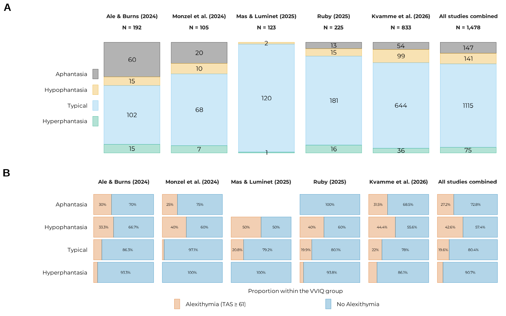

Every analysis in this report runs on all_data,
containing 1478 participants pooled from five studies: two unpublished
datasets shared by the authors specifically for this project, three
retrieved from previously published or shared work. This page describes
where each of the five came from, who was in them, and a few places
where they genuinely differ from each other. Differences that may matter
later, when the question becomes whether a pattern found in the pooled
sample holds up once study membership is accounted for (see the floor-group
model page).
The five studies
all_data |>
dplyr::group_by(study) |>
dplyr::reframe(
Language = unique(lang),
N = paste0(
dplyr::n(),
" (",
sum(gender == "female", na.rm = TRUE),
" F, ",
sum(gender == "other", na.rm = TRUE),
" O)"
),
M_age = mean(age, na.rm = TRUE),
SD_age = sd(age, na.rm = TRUE),
min_age = min(age, na.rm = TRUE),
max_age = max(age, na.rm = TRUE)
) |>
knitr::kable(digits = 2)| study | Language | N | M_age | SD_age | min_age | max_age |
|---|---|---|---|---|---|---|
| burns | en | 192 (122 F, 3 O) | 38.69 | 11.44 | 18 | 86 |
| monzel | en | 105 (74 F, 0 O) | 27.87 | 9.29 | 18 | 59 |
| mas | fr | 123 (110 F, 0 O) | 19.78 | 1.15 | 18 | 24 |
| ruby | fr | 225 (180 F, 3 O) | 35.96 | 16.07 | 10 | 82 |
| kvamme | en | 833 (426 F, 5 O) | 40.45 | 13.44 | 18 | 83 |
Ale & Burns (2024) collected VVIQ and TAS-20 data as part of a study on aphantasia, alexithymia, and PTSD symptomatology. 192 English-speaking participants (122 females, 3 other genders; mean age 38.7, SD 11.4; range 18-86) were recruited via social media. Their data are archived on a private OSF (osf.io/hqz3e), but made openly available in clean form in this study’s own OSF project.
Monzel et al. (2024) collected VVIQ and TAS-20 data as part of a study on aphantasia, alexithymia, and affective processing. 105 English-speaking participants (74 females; mean age 27.9, SD 9.29; range 18-59) were recruited via the Aphantasia Research Project Bonn’s participant database, split into 75 controls (VVIQ > 32) and 30 participants with weak or no imagery (VVIQ ≤ 23). Their own paper reports a real, worth-flagging imbalance: the aphantasia sub-group was on average 6.6 years older than controls (t = 3.09, p = .004, d = 0.76), a difference large enough that the original authors treated age as a covariate throughout. It’s a genuine limitation of that specific sample, though not one that appears to have distorted the pattern this project is built on: the VVIQ-TAS relationship in Monzel et al.’s data looks the same as in the other four studies. Their data are openly archived on OSF (osf.io/y9c8g).
Ruby collected VVIQ and TAS-20 data as part of a study on the sensory and emotional characteristics of autobiographical and dream memories. 225 French participants (180 females, 42 males, 3 other; mean age 36, SD 16.1; range 10-82), recruited by an announcement on social media and on mailing lists dedicated to research volunteers in Lyon and Paris, completed VVIQ and TAS-20 together with sensory and emotional scales to describe the one autobiographical memory from the day before and the one dream memory from the night before they had to report. The inclusion criterion was to have a memory of a dream from the night before when filling in the questionnaire.
Mas & Luminet (2025) collected VVIQ and TAS-20 data as part of a preregistered lab experiment on alexithymia and mental representations. 123 French-speaking participants (110 females; mean age 19.78, SD 1.15; range 18-24) were recruited from a research methods course, in exchange for course credit. No inclusion or exclusion criteria were specified for this study.
Kvamme et al. (2026) collected VVIQ and TAS-20 data as part of a much larger study on mental imagery, mental health, subjective interoception, and alexithymia. 833 English-speaking participants (426 females, 5 other genders; mean age 40.5, SD 13.4; range 18-83) were recruited through Prolific, in two phases: an initial, targeted recruitment of individuals with VVIQ ≤ 32 from a pre-existing database, followed by open recruitment to cover the full range of imagery vividness. That two-phase design is a large part of why this study contributes such a substantial share of the pool’s complete-aphantasia and hypophantasia participants despite not being an aphantasia-only sample (see the model comparison page for how much that group specifically matters to this project’s central finding).
Kvamme et al.’s exclusion pipeline is also worth naming directly,
since it is more thoroughly documented than most: of an initial 855
respondents, 22 were excluded for excessively short or implausibly long
completion times, and for suspected careless responding, detected with
the Even-Odd Inconsistency Index (via the careless R
package). The 833 remaining participants are what this project’s
kvamme study component contains.
By VVIQ group
The same pooled sample, seen instead through the four-group VVIQ classification used throughout this report:
all_data |>
dplyr::group_by(vviq_group_4) |>
dplyr::reframe(
N = paste0(
dplyr::n(),
" (",
sum(gender == "female", na.rm = TRUE),
" F, ",
sum(gender == "other", na.rm = TRUE),
" O)"
),
M_age = mean(age, na.rm = TRUE),
SD_age = sd(age, na.rm = TRUE),
min_age = min(age, na.rm = TRUE),
max_age = max(age, na.rm = TRUE),
M_vviq = mean(vviq, na.rm = TRUE),
SD_vviq = sd(vviq, na.rm = TRUE)
) |>
dplyr::rename("VVIQ group" = 1) |>
knitr::kable(digits = 2)| VVIQ group | N | M_age | SD_age | min_age | max_age | M_vviq | SD_vviq |
|---|---|---|---|---|---|---|---|
| aphantasia | 147 (102 F, 5 O) | 40.27 | 12.90 | 19 | 86 | 16.00 | 0.00 |
| hypophantasia | 141 (87 F, 1 O) | 36.40 | 12.21 | 17 | 64 | 24.33 | 4.61 |
| typical | 1115 (675 F, 4 O) | 36.34 | 14.47 | 10 | 82 | 55.33 | 10.05 |
| hyperphantasia | 75 (48 F, 1 O) | 40.48 | 14.95 | 16 | 83 | 77.31 | 1.90 |
Recruitment, and why the five studies aren’t interchangeable
These five studies were not designed together, and it shows in ways worth being upfront about, not smoothing over. They differ in language (three English-speaking samples, two French-speaking), in recruitment channel (social media, a dedicated aphantasia research database, a university subject pool, Prolific), and most consequentially, in how “aphantasia” was operationalised before this project pooled everything onto a common 16-80 VVIQ scale. Ale & Burns used a cutoff of VVIQ ≤ 32 to define their aphantasia group, explicitly because their own prior work found that threshold more inclusive of people who self-identify as having aphantasia than a stricter cutoff. Monzel et al. used VVIQ ≤ 23. Kvamme et al. used ≤ 32 for their broader “aphantasia” group, then further distinguished “core aphantasia” (16-23) from “hypophantasia” (24-32) within it, a finer split closely related to the one this project’s own categorical model uses (see model comparison).
None of this is a flaw in any individual study, as each threshold was a reasonable choice given that study’s own goals. It is, however, a real illustration of a point this project’s own results speak to directly: VVIQ threshold conventions vary across the field, sometimes substantially, and a pooled analysis that treats VVIQ as continuous rather than pre-sorting everyone into study-specific categories sidesteps that inconsistency rather than inheriting it.
By dataset, VVIQ, and TAS-20 (alexithymia) group
p_counts <-
all_data |>
dplyr::bind_rows(all_data |> dplyr::mutate(study = "total")) |>
dplyr::mutate(
study = factor(
study,
levels = c("burns", "monzel", "mas", "ruby", "kvamme", "total")
)
) |>
plot_vviq_group_proportions(vviq_group_4, base_size = 13, prop_txt_size = 5)
p_props <-
all_data |>
summarise_aph_and_alexi(vviq_group_4) |>
plot_alexithymia_proportions(
vviq_group_4,
ncol = 6,
base_size = 13,
prop_txt_size = 3
)
ggpubr::ggarrange(
p_counts,
p_props,
ncol = 1,
heights = c(1.1, 1),
labels = "AUTO",
font.label = list(size = 24, face = "bold")
) |> suppressWarnings()
The complete-aphantasia group (VVIQ = 16) is present in every study except Mas & Luminet’s, whose young, French, course-credit sample happened not to include anyone at the scale’s absolute floor, which is worth keeping in mind when reading the floor-group model page’s per-study breakdown, where that study’s line is necessarily estimated without any direct floor-group data of its own.
Questionnaire reliability
Beyond the reliability figures reported for the original and French validations of the VVIQ and TAS-20 (see the manuscript’s Questionnaires section), it is good practice to also report internal consistency for the specific, pooled sample an analysis actually runs on: reliability is a property of a sample’s responses, not solely of an instrument in the abstract, and pooling five studies collected under different conditions is the kind of situation where it is worth checking rather than assuming.
sample_reliability <- check_scales_reliability(all_data, silence = TRUE)
knitr::kable(sample_reliability)| Scale | Cronbach’s alpha | McDonald’s omega |
|---|---|---|
| VVIQ (16 items) | 0.97 | 0.98 |
| TAS-20, total (20 items) | 0.86 | 0.89 |
| TAS-20, DIF (7 items) | 0.86 | 0.91 |
| TAS-20, DDF (5 items) | 0.82 | 0.85 |
| TAS-20, EOT (8 items) | 0.63 | 0.73 |
In the present pooled sample (N = 1478), the VVIQ and the TAS-20 total score both show excellent internal reliability (VVIQ: Cronbach’s = 0.97, McDonald’s = 0.98; TAS: = 0.86, = 0.89), comparable to the reliabilities reported for the original and French validations cited in the manuscript. At the subscale level, DIF ( = 0.86, = 0.91) and DDF ( = 0.82, = 0.85) are similarly strong, while EOT ( = 0.63, = 0.73) is comparatively weaker, consistent with the pattern already noted in the manuscript’s Questionnaires section, where EOT is described as the TAS-20’s least internally consistent facet across the wider literature (Bagby et al., 2020; Schroeders et al., 2022). This is not a given for a sample pooled across five studies, two languages of data collection (English and French, see Recruitment, and why the five studies aren’t interchangeable above), and a wide range of recruitment channels: checking it directly, rather than assuming it from the instruments’ published psychometric properties alone, is a small but genuinely useful assessment that is not always done in practice.
We can also check Cronbach’s and McDonald’s per study, except for Monzel et al. (2024), who did not provide item-level data in their open dataset:
check_scales_reliability(all_data, study, silence = TRUE) |>
dplyr::mutate(
Study = dplyr::case_match(
study,
"burns" ~ "Ale & Burns (2024)",
"mas" ~ "Mas & Luminet (2025)",
"ruby" ~ "Ruby (2025)",
"kvamme" ~ "Kvamme et al. (2026)"
),
.keep = "unused"
) |>
dplyr::relocate(Study) |>
knitr::kable()| Study | Scale | Cronbach’s alpha | McDonald’s omega |
|---|---|---|---|
| Ale & Burns (2024) | VVIQ (16 items) | 0.98 | 0.99 |
| Ale & Burns (2024) | TAS-20, total (20 items) | 0.87 | 0.87 |
| Ale & Burns (2024) | TAS-20, DIF (7 items) | 0.86 | 0.91 |
| Ale & Burns (2024) | TAS-20, DDF (5 items) | 0.80 | 0.83 |
| Ale & Burns (2024) | TAS-20, EOT (8 items) | 0.61 | 0.77 |
| Mas & Luminet (2025) | VVIQ (16 items) | 0.87 | 0.90 |
| Mas & Luminet (2025) | TAS-20, total (20 items) | 0.77 | 0.81 |
| Mas & Luminet (2025) | TAS-20, DIF (7 items) | 0.74 | 0.81 |
| Mas & Luminet (2025) | TAS-20, DDF (5 items) | 0.79 | 0.86 |
| Mas & Luminet (2025) | TAS-20, EOT (8 items) | 0.38 | 0.48 |
| Ruby (2025) | VVIQ (16 items) | 0.95 | 0.96 |
| Ruby (2025) | TAS-20, total (20 items) | 0.85 | 0.87 |
| Ruby (2025) | TAS-20, DIF (7 items) | 0.77 | 0.86 |
| Ruby (2025) | TAS-20, DDF (5 items) | 0.80 | 0.84 |
| Ruby (2025) | TAS-20, EOT (8 items) | 0.65 | 0.75 |
| Kvamme et al. (2026) | VVIQ (16 items) | 0.97 | 0.98 |
| Kvamme et al. (2026) | TAS-20, total (20 items) | 0.88 | 0.90 |
| Kvamme et al. (2026) | TAS-20, DIF (7 items) | 0.90 | 0.92 |
| Kvamme et al. (2026) | TAS-20, DDF (5 items) | 0.83 | 0.86 |
| Kvamme et al. (2026) | TAS-20, EOT (8 items) | 0.56 | 0.69 |
We can see that the good internal reliability of all scales and comparatively relative weakness of EOT is consistent across studies. EOT’s reliability is particularly low in Mas & Luminet (2025). One last check we can think of is to assess whether the internal coherence of the three TAS-20 sub-scales, operationalised as their pairwise correlations, is consistent across studies:
dplyr::bind_rows(
all_data |> dplyr::mutate(study = "Total sample"),
all_data |>
dplyr::filter(study != "mas") |>
dplyr::mutate(study = "Total sample without Mas & Luminet"),
all_data |> dplyr::mutate(
study = dplyr::case_match(
study,
"burns" ~ "Ale & Burns (2024)",
"monzel" ~ "Monzel et al. (2024)",
"mas" ~ "Mas & Luminet (2025)",
"ruby" ~ "Ruby (2025)",
"kvamme" ~ "Kvamme et al. (2026)"
)
)
) |>
dplyr::group_by(study) |>
dplyr::summarise(
"DIF-DDF" = cor(tas_identify, tas_describe) |> round(2),
"DIF-EOT" = cor(tas_identify, tas_external) |> round(2),
"DDF-EOT" = cor(tas_describe, tas_external) |> round(2),
n = dplyr::n(),
.groups = "drop"
) |>
knitr::kable()| study | DIF-DDF | DIF-EOT | DDF-EOT | n |
|---|---|---|---|---|
| Ale & Burns (2024) | 0.76 | 0.28 | 0.44 | 192 |
| Kvamme et al. (2026) | 0.75 | 0.29 | 0.39 | 833 |
| Mas & Luminet (2025) | 0.63 | 0.04 | 0.10 | 123 |
| Monzel et al. (2024) | 0.60 | 0.32 | 0.46 | 105 |
| Ruby (2025) | 0.64 | 0.29 | 0.46 | 225 |
| Total sample | 0.71 | 0.20 | 0.35 | 1478 |
| Total sample without Mas & Luminet | 0.72 | 0.23 | 0.39 | 1355 |
Consistent with the reliability results, the correlations between EOT and DIF/DDF in Mas & Luminet’s dataset are weaker. To test this, we added another set of correlations on the last line of the table assessing between-scales correlations in the pooled sample without their dataset. Given the small size of the reduction in correlations caused by the addition of their dataset, and taking into account the different scope and target population of their study (see the background of their study, we ultimately decided that these statistics didn’t warrant the entire removal of 123 potentially valuable observations.
Continuing through the Extended Online Report: this page follows how this study found its shape. To keep reading in order, continue to the model comparison page next. Or jump to the floor-group model, in depth, model diagnostics, implementation notes, or for those who come after.